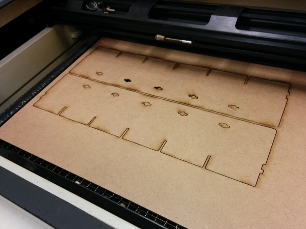
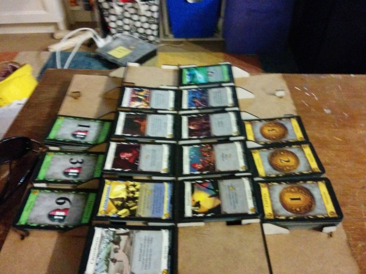

Laser Cut Dominion Playing Field



It’s my girlfriend’s birthday this week, so I decided to try and improve our experience while playing dominion. If you’ve ever played before, you know that you need quite a bit of space to lay out the 15 (at least) cards. I found these designs on thingiverse for a pretty sweet looking board (which you can find here http://www.thingiverse.com/thing:19144). I have access to a Epilog Zing laser cutter through Artengine. It’s a pretty cool machine, with a bed size of 24" by 12" and it can cut through 1/4" MDF with no problem. The problem was that the 2 file formats included wouldn’t open in inkscape! I have to open them in order to ensure that the lines are 0.001" thick if I want a vector (cut), rather than a raster (engraving) to come out of the laser.
First attempt to check the DXF files was with Inkscape, which complained about libxml2 missing when I tried using the Mac version. Next, I tried opening them in Autocad, Qcad, Inventor Fusion and DraftSight. Some of the programs worked, but I couldn’t set the line width that was used when creating a PDF. Finally, I gave up and set up Ubuntu 14.04 inside virtual box and installed Inkscape there. Success! I was able to create both SVG and PDF versions of the DXF files with the appropriate linewidths and document size.
You can download the altered things here: http://www.thingiverse.com/thing:363426
Big thanks to flomo for the initial designs.
{kind=link}
{kind=link}